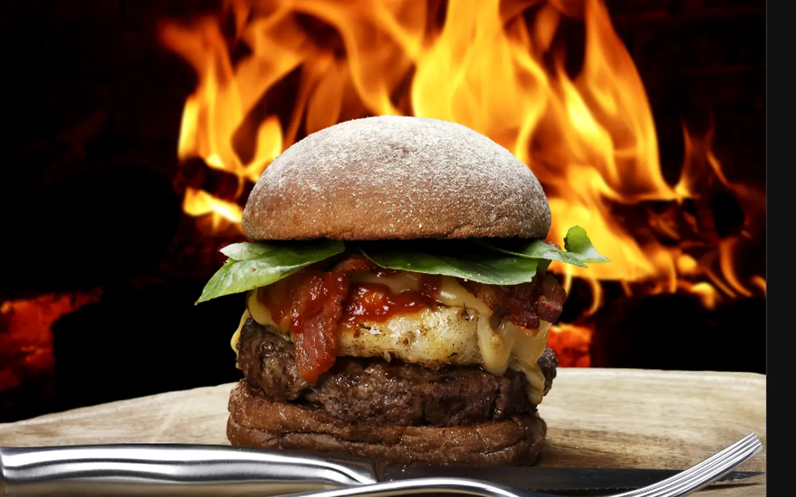
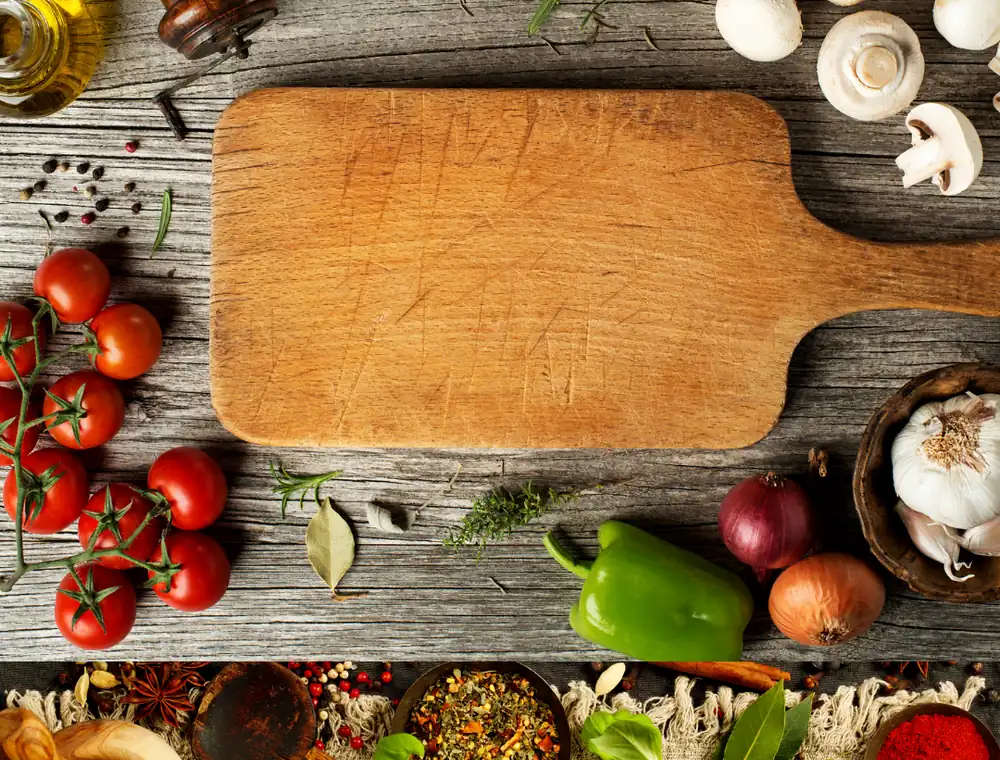
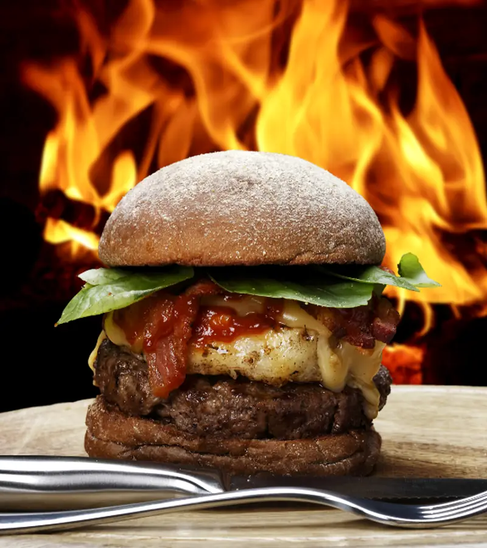
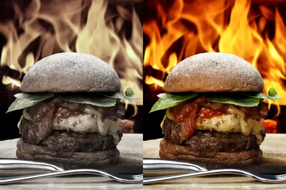

Filled rolls
Ham, turkey, beef, chicken, tuna, prawns or cheddar—with salad or kept simple.
from £5.25
Llandudno · family food hall · since 1990
Big fillings, hot breakfasts and deli favourites—made for a good stop in town.

family-run, town-centre, made fresh
The Food Hall
The Lloyd Street story starts in 1990. Today the family runs three local deli restaurants in central Llandudno, keeping the original idea simple: fresh food and a warm welcome.
Catering
For meetings, gatherings or something bigger, ask the team about fresh food from the deli.
Catering enquiry
house favouriteFind us
Open from 8am–5pmCheck holiday hours before travelling.

One clear path from appetite to the counter.